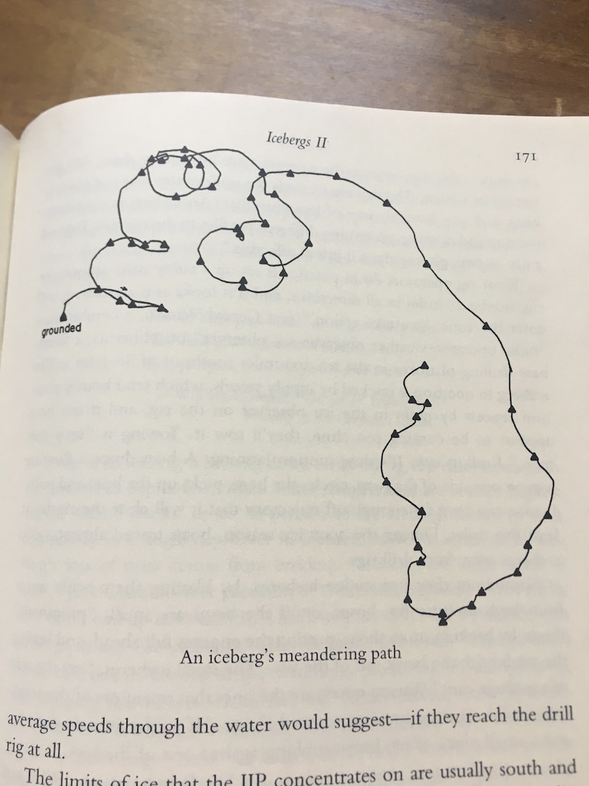

Date: 2025-02-04
 Image uploaded to Are.na by Jon-Kyle Mohr
sketch//this is a comment
function setup(){
createCanvas(500,500);
}
function draw(){
//main loop
//each run of draw is a frame
}Javascript is weakly typed
var x = 0;
let y = 0;We covered setup and draw. There is also
function mousePressed(){}
function keyPressed(){}
function keyTyped(){}function preload(){
//load media here
img = loadImage('assets/quality_meme.jpg');
} Example code - preloading an image
ellipse(mouseX,mouseY,20);Keypresses, mouse movement and clicks are examples of input and interaction
Similar to Processing/Java
for (var i = 0; i < 10; i++){
print(i) // will print 1, 2, 3...to 9 on separate lines
}Don’t forget you may see let instead of
var
Arrays can be described literally. They always start with 0.
let array = ['zeroeth','first','second','last'];
console.log(array[0]); //will print zeroeth to consolelet numArray = [0, 1, 2];
array.push(3);
array.push(4);
console.log(array); //will result [0, 1, 2, 3, 4]//continuing from above
array.pop();
console.log(array); //will result [0, 1, 2, 3]Code examples in p5js can be found here
Satellite video of world’s biggest iceberg, A23a, breaking free
from NPR
from SciTechHub
When icebergs break away from ice shelves or large glacier fronts, they become travelers in the ocean, carried by currents, spinning in eddies, shifting with the tides, and pushed along by the wind. Sometimes, these massive ice chunks get stuck — either grounded on a shallow seafloor or caught in a swirling mass of water. Iceberg A-23A experienced both. While every iceberg’s journey is unique, most follow the same general path. More than 90 percent of bergs around Antarctica enter the clockwise-flowing current of the Weddell Gyre off East Antarctica and eventually escape, shooting north along the Antarctic Peninsula and finally out across the Drake Passage into warmer South Atlantic waters—an ocean route known as “iceberg alley.” –How the World’s Largest Iceberg Escaped an Ocean Whirlpool, from SciTechDaily
Returns random numbers that can be tuned to feel organic.
Values returned by random() and randomGaussian() can change by large amounts between function calls. By contrast, values returned by noise() can be made “smooth”. Calls to noise() with similar inputs will produce similar outputs. noise() is used to create textures, motion, shapes, terrains, and so on. Ken Perlin invented noise() while animating the original Tron film in the 1980s. noise() always returns values between 0 and 1. It returns the same value for a given input while a sketch is running. noise() produces different results each time a sketch runs. The noiseSeed() function can be used to generate the same sequence of Perlin noise values each time a sketch runs. The character of the noise can be adjusted in two ways. The first way is to scale the inputs. noise() interprets inputs as coordinates. The sequence of noise values will be smoother when the input coordinates are closer. The second way is to use the noiseDetail() function. The version of noise() with one parameter computes noise values in one dimension. This dimension can be thought of as space, as in noise(x), or time, as in noise(t).
from noise in the p5.js reference, along with great code examples
How to Code Procedural Terrain with Perlin Noise (JavaScript & p5.js) with RachelfTech
Perlin Noise in p5.js with The Coding Train